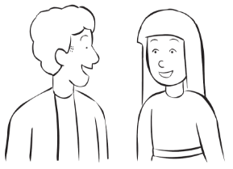

We care for your mental well being
We ensure you have the best knowledge, help and resources for good mental health
We ensure you have the best knowledge, help and resources for good mental health

We fight stigma and discrimination in mental health across diverse communities and changed policy, perception, and people. As mental health continues to change, we aim to be at the forefront of the evolution.

MHASF's Training Institute provides evidence-based trainings designed to enhance skills and knowledge for professional development within a cooperative learning environment. We deliver engaging, interactive trainings and workshops discussing an array of mental health topics for people of any profession and level of familiarity.
MHASF's Training Institute provides evidence-based trainings designed to enhance skills and knowledge for professional development within a cooperative learning environment.
MHASF's Training Institute provides evidence-based trainings designed to enhance skills and knowledge for professional development within a cooperative learning environment. We deliver engaging, interactive trainings and workshops
We have a set of resources that help you in any matter regarding mental health. If you need to speak to someone we also have people on the line ready to be of help in your time of need
MHASF is here for you. Our combined efforts of self-quarantining will save lives. While physical social distancing is recommended, it does not mean we need to distance ourselves from one another emotionally and mentally. During this difficult period, we want to help and support by doing what we do best: peer-to-peer support, mental health information/referrals, and holistic wellness strategies.
Become a member of MHASF and help lead the frontier to advocate for better innovation in mental health care
Tell your story, serve as someone's beacon of hope in their time of need
Help spread the word about the need for better mental health care and attention.
Volunteer to help MHASF in any event and stuff to do with some volunteering goes here